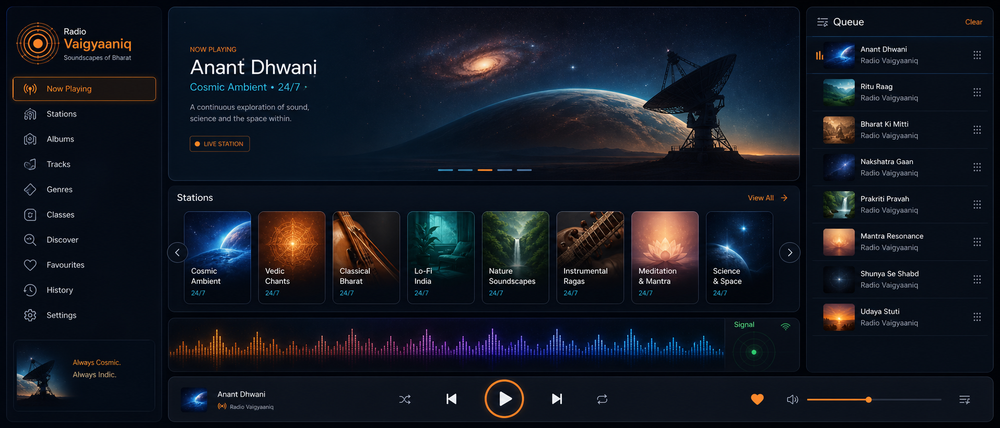
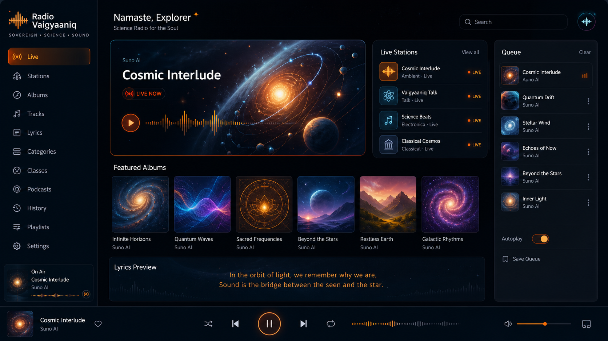
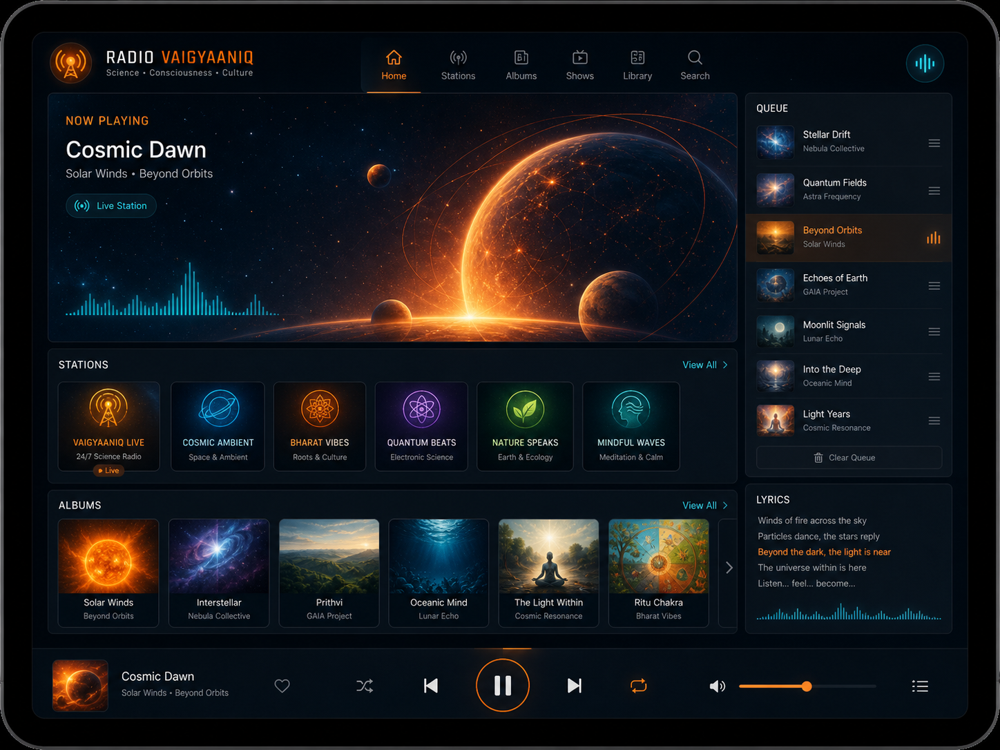
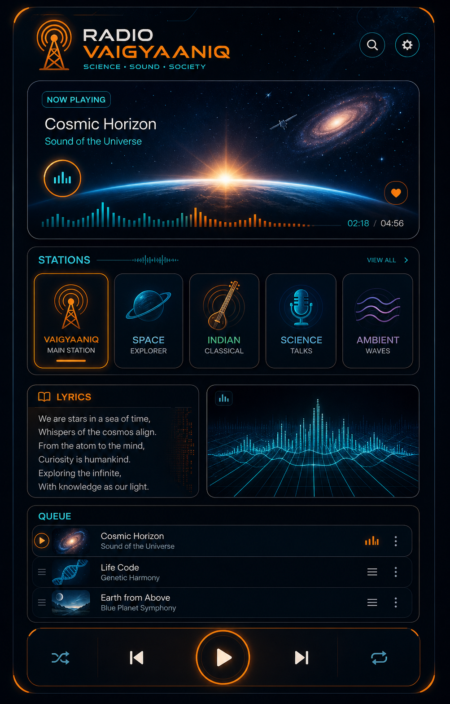
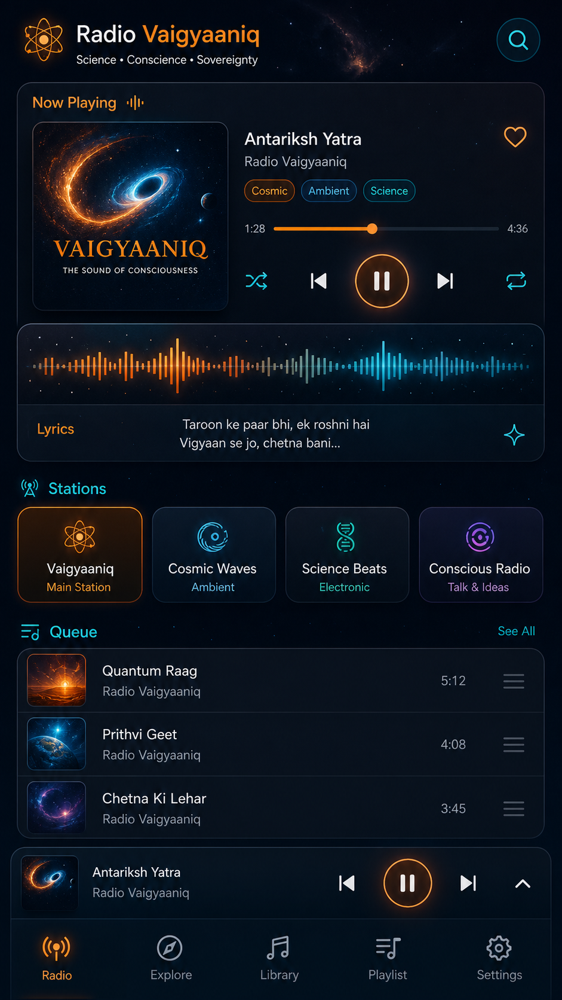

Generated Concept Pack
Standalone Radio UI Images
Aspect-ratio variants for Radio Vaigyaaniq surfaces: ultrawide hero, desktop landing, tablet preview, square cover, portrait poster, and mobile story/app preview.




